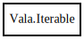

Vala.Iterable – gee Reference Manual
Packages
gee
Vala
Iterable
Iterable
get_element_type
iterator
Iterable
Object Hierarchy:

Description:
public
abstract
class
Iterable
<
G
>
Implemented by classes that support a simple iteration over instances of the collection.
All known sub-classes:
ArrayList
Collection
HashSet
KeySet
List
Set
ValueCollection
Namespace:
Vala
Package:
gee
Content:
Creation methods:
protected
Iterable
()
Methods:
public
abstract
Type
get_element_type
()
public
abstract
Iterator
<
G
>
iterator
()
Returns a Iterator that can be used for simple iteration over a collection.